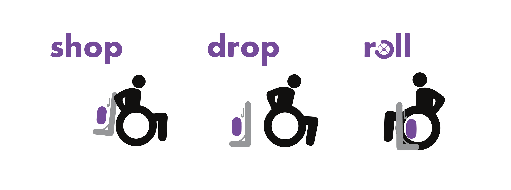
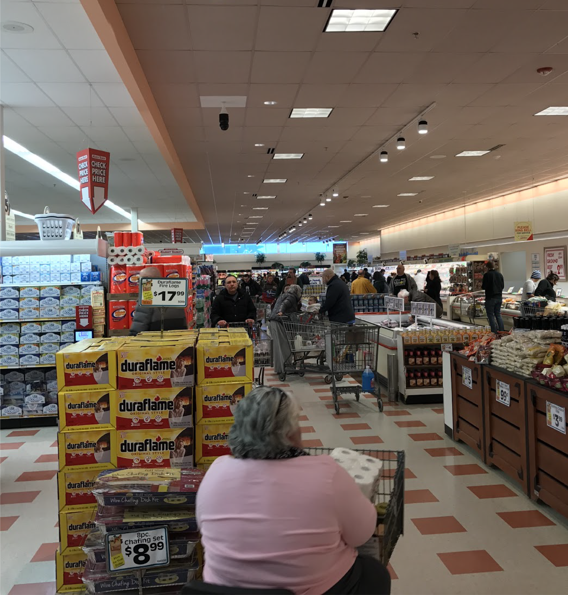
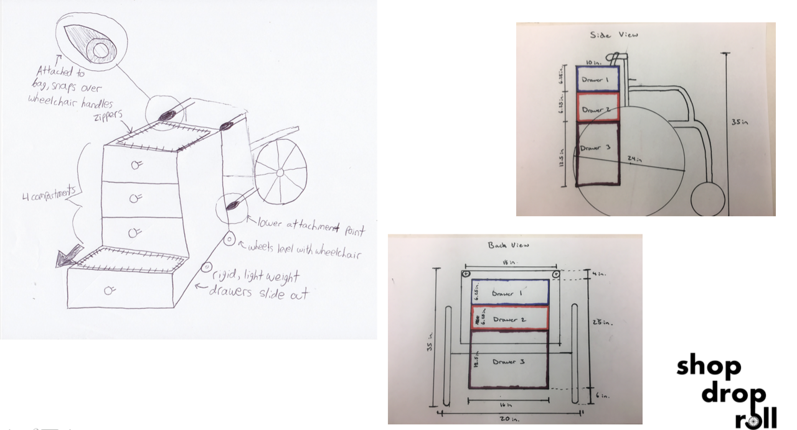
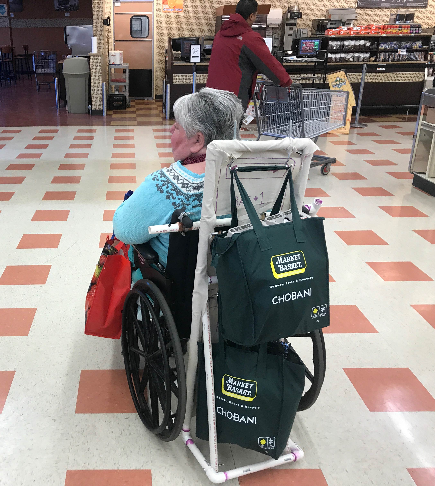
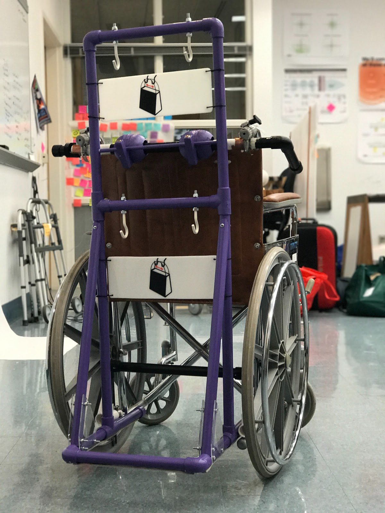
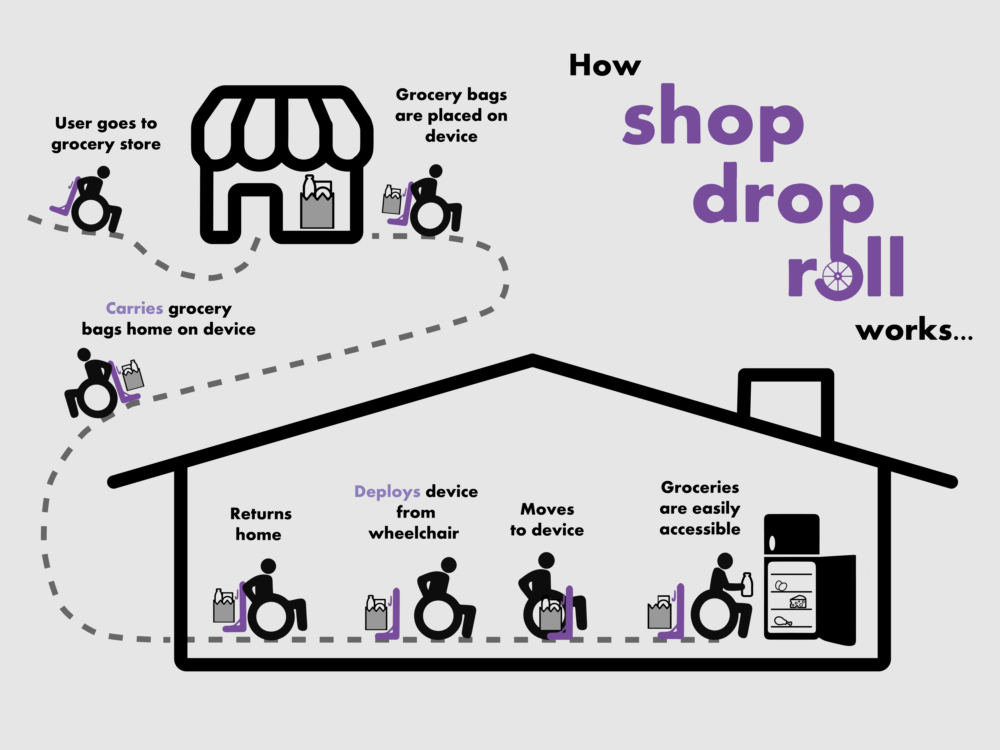
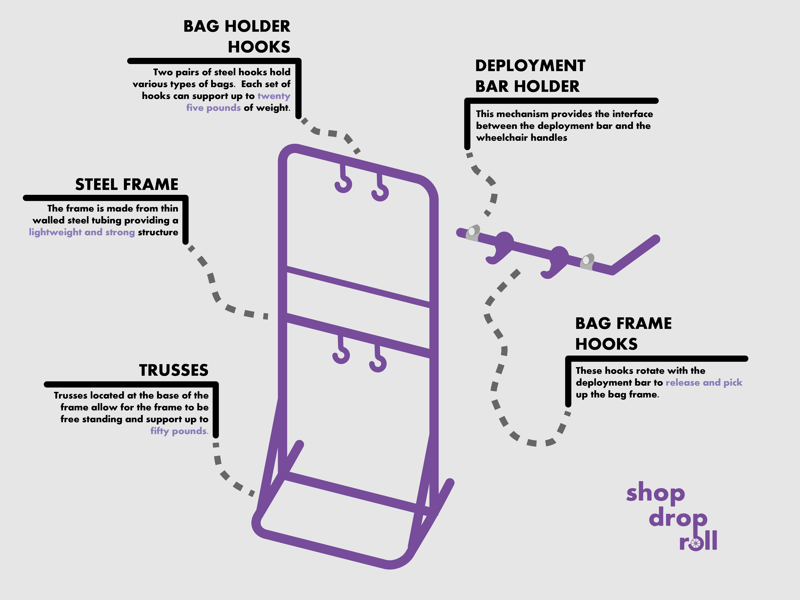

ShopDropRoll LLC is an assistive technology startup founded by Babson student Sunny Chae (Class of 2018) and Olin students Micaela Chiang (Class of 2019), Daniel Daugherty (Class of 2019), and Andrew Holmes (Class of 2019). The company's main product features a wheelchair attachment that provides users' with accessible storage from the back of their wheelchair. The company has received awards from the Babson BETA Challenge and Northeast ARC Foundation and was featured in Dr. Caitrin Lynch's TEDx talk on design thinking.
Concept Discovery

The ShopDropRoll product was initially designed in a course at Olin College called Engineering for Humanity taught by Professors Caitrin Lynch and Ela Ben-Ur. In this class groups of students were paired up with local older adult volunteers and were tasked with co-designing a product that would help improve some aspect of their lives.
The ShopDropRoll team was partnered with Terri, a kind-hearted and positive woman who greatly values her independence.
Throughout the beginning of the semester we spent a lot of time with Terri by visiting her home and doing activities with her such as grocery shopping. Through these interactions we learned that Terri greatly values her independence and is always looking for ways to get out of her house and escape "cabin fever." Grocery shopping is one of the ways Terri beats "cabin fever", but due to the challenge of carrying the groceries on her wheelchair and the help she requires from many of the grocery store workers, she shops very rarely which causes her to bring back large amount of groceries per trip.
By providing Terri with a product that could help her carry her groceries more easily we could help her become more independent and escape "cabin fever" more frequently and comfortably.

Design Process

Our initial design sketches focused on providing maximum amounts of storage on the back of the wheelchair so that Terri would be able to successfully bring back lots of groceries to her home. But as we continued designing, we realized that maximizing storage was addressing the wrong problem. By reflecting back upon what we learned from our early interactions with Terri we realized that our product shouldn't prioritize the amount of groceries. We should instead be designing a product that enables Terri to go shopping more often rather than help her bring back these large amounts of groceries.
With a pivoted focus on desiging a product that would enable Terri to go shopping more frequently, we developed the initial concept for ShopDropRoll. We built a functional prototype out of PVC tubing and lasercut hardboard and had Terri test our product and provide feedback.
Originally, Terri hung the grocery bags on the wheelchair handlebars and had to tilt her chair backwards to drop the groceries to the floor. Our initial prototype provided Terri with a safer way of releasing the groceries and accessing them from the back of her chair.

Final Prototype

At the end of the semester we delivered a functional prototype to Terri. We painted it her favorite color and she still uses it to this day. Terri shared with us that before receiving this product she would only go to the grocery store once a month, but with this product she's been going once or twice a week. Not only has our product helped Terri beat her "cabin fever" but also given her many more opportunities to socialize and interact with people. Terri equips ShopDropRoll whenever she leaves the house and many people ask her about it. Terri loves sharing her co-designing experience with our team with anyone who asks.



ShopDropRoll LLC

Motivated by Terri's excitement and benefit from our product, our team decided to create ShopDropRoll LLC in efforts to place our product in more wheelchair users' hands. From the funds we were awarded from the Babson BETA Challenge and the Northeast ARC Competition, our team held a booth at the 2018 Boston Abilities Expo to generate interest and recruit a set of early pilot testers to help make our product more universal.
From our pilot tests with our new adoptors, we learned that the product we designed for Terri was very niche. Our conversations with many of the potential customers at the Abilities Expo revealed that more market potential lied in a product that did not focus on accessing grocery bags, but in a streamlined product that could provide accessible storage from the back of the chair without requiring the user to navigate to our deployed bag frame.
With this new product vision in mind, we are in the process of iterating on our product to accomodate a larger number of wheelchair users.